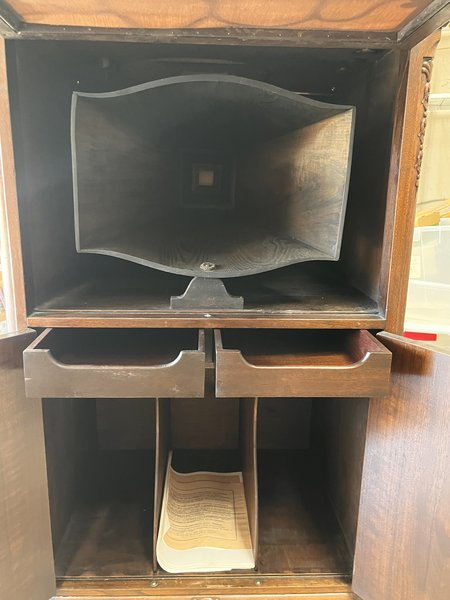

Cheney Phonograph — upright console
Collectible Chicago-made upright disc phonograph — complete and plays great, with rare factory paperwork

Asking $250 — open to any offer
Cheney was founded in 1914 by concert violinist Forest Cheney, who designed his machines around an acoustic theory rather than copying Victor: sound was routed through a stepped, folded tone arm into resonating wood chambers and a violin-shaped internal horn. The design was distinctive enough that Cheney beat Victor in a 1921 patent-infringement appeal, and a Cheney won a gold medal at the 1915 Panama-Pacific Exposition. Among collectors, Cheney is one of the more desirable “off-brands” — a notch above generic Victrola clones.
This is an upright console floor model in mahogany with a carved fretwork grille, a gold-plated cast tone arm, and lower record-storage doors. Its patent plate is stamped “No. 6-8300,” and — unusually — the original factory packing/inspection slip (serial 77541) survives with the machine, along with an accessory box holding a spare Cheney reproducer and period needle blocks. Paperwork like that almost never survives and gives a buyer real confidence in the machine’s history.
Watch it run
The Cheney upright console
Highlights
- Complete and plays great — nothing missing (see the video).
- Original feet still with it — the first thing to go missing on a console phonograph.
- Comes with its original boxes and two full sets of reproducers.
- The screws that secure the tone arm were missing; they have been found and installed (not visible in the photos).
- Rare original factory packing/inspection slip (serial 77541) and period needle blocks included.
- Distinctive gold-plated stepped tone arm and carved mahogany cabinet read as fine furniture.
Photos — Cheney Phonograph — upright console (click any photo to enlarge & browse)


